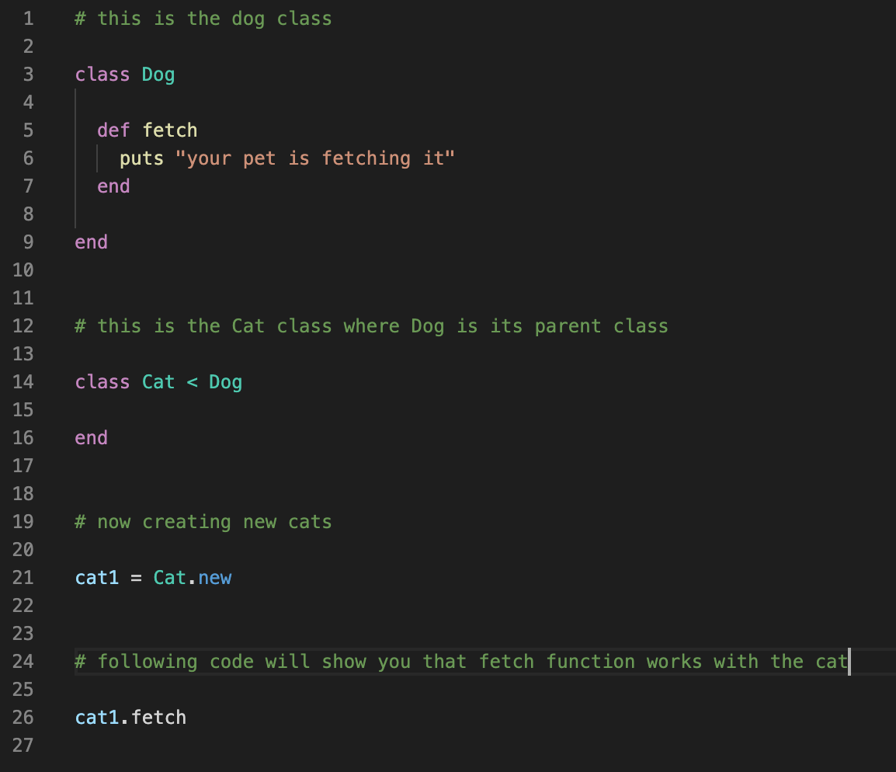
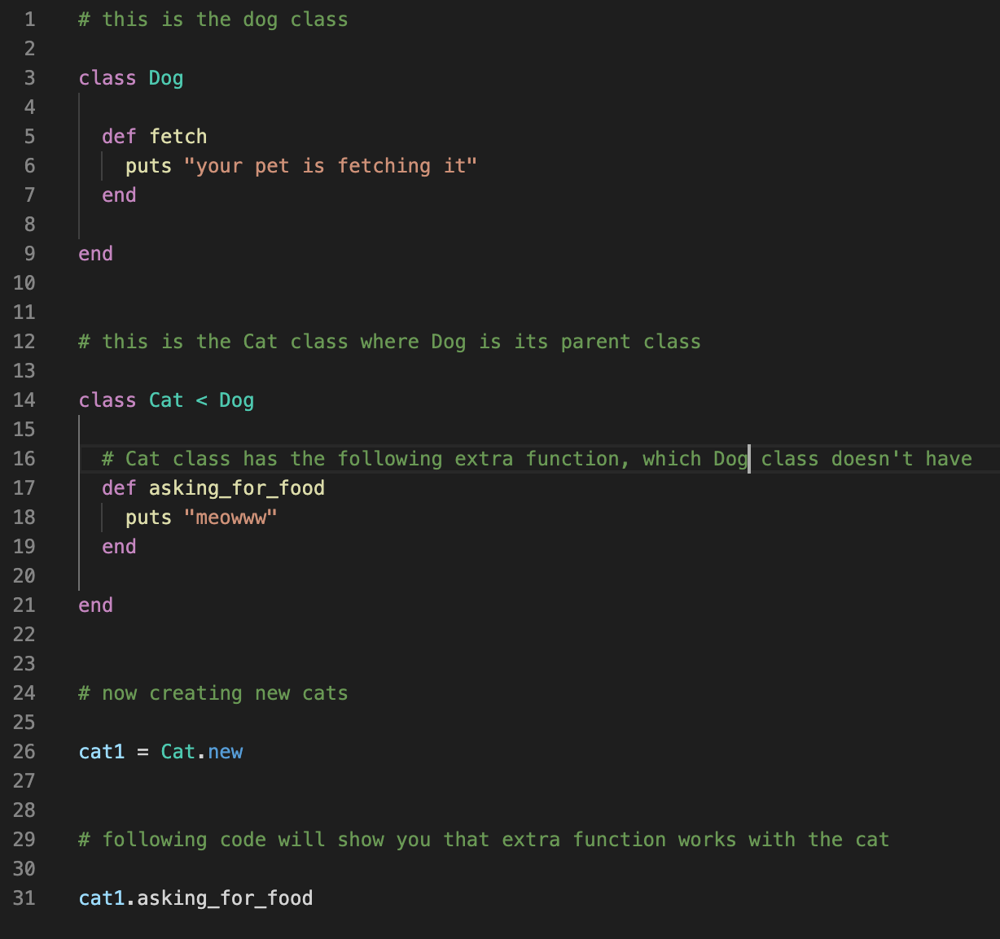

The Four Pillars of Object Oriented Programming (OOP) — for Beginners
Being a student at Flatiron School, the first computer language we are taught is Ruby, which is an Objected Oriented Programming language. Object Oriented Programming (OOP) is used by the back-end development world in coding multiverse (you still call it universe? catch up!). Popular languages of OOP are Ruby, Java, Python, C++, Objective-C and Visual Basic .NET (amongst others). Everything is an object in OOP and it focuses on the creation of these objects.
The four pillars of OOP are:
- Abstraction
- Encapsulation
- Inheritance
- Polymorphism
Let’s dive in for more details:
1. Abstraction
Abstraction is fundamentally withholding the inner processes of a class and presenting only the crucial features to the end user. According to this principle, we shouldn’t show information which is not useful to the customer.
For example, when you order food from Deliveroo. As a customer, we only see our location or where we want to order food and which restaurants are available to us and how long it will take for the driver to deliver food. The user doesn’t need to see which classes are being called into action, how the app is calculating distance and other technical details which are irrelevant to the end user. This is why Abstraction is also referred to as “Hiding of Information”.
2. Encapsulation
Encapsulation means binding different data and method functions together into a single body of code, which is class. This principle makes the data secure by keeping it one place and accomplishes the ‘data hiding’ by default.
For example, suppose that we want to make a change on iPhone camera, so each time we tap the camera icon, instead of opening the phone camera, it starts recording a selfie video straightaway. To achieve this functionality edit, we only need to make changes in the Camera class, as it encapsulates all the code that relates to the camera.
3. Inheritance
Inheritance allows an object to take the property of another object. With inheritance concept, one class can share all of its functionality with another class. The class that is inheriting is called child class (or subclass) and the class that is enabling the child class to inherit from it is called — you guessed it — parent class (or superclass).
A theoretical example could be where suppose you are creating Dog and Cat classes. Through an instance method, you teach your Dog to fetch something. You want to teach your cat to fetch too. Instead of writing the code twice, the Cat class can inherit this functionality from the Dog class.
4. Polymorphism
Polymorphism literally means “many forms”. In OOP terms, it means that a child class can have the functionality of a parent class and at the same time have its own methods and behaviours. Therefore child class who inherits a parent class can return different values than its parent class. However a parent class cannot have the functions of a child class.
For example, using the same Dog and Cat classes example, Cat class (being a child class) can inherit the “fetch” behaviour from the Dog class. However the cat class can simultaneously teach the cat to “ask for food” or to “ruin my sofa” (no, you don’t need to teach them to ruin your sofa, they come preprogrammed with that evil ‘method’).
